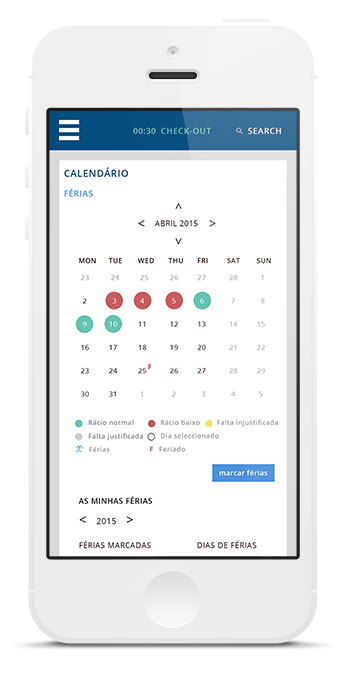
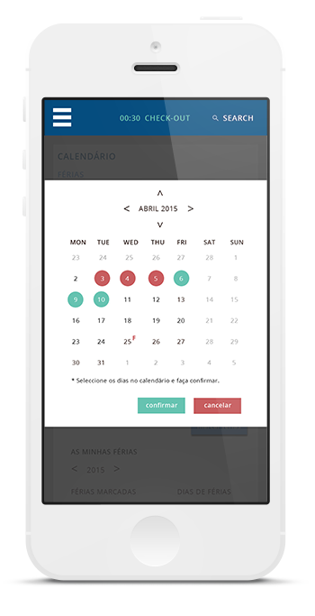
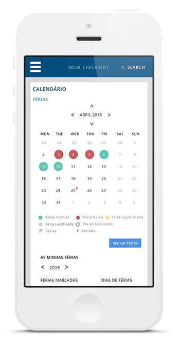
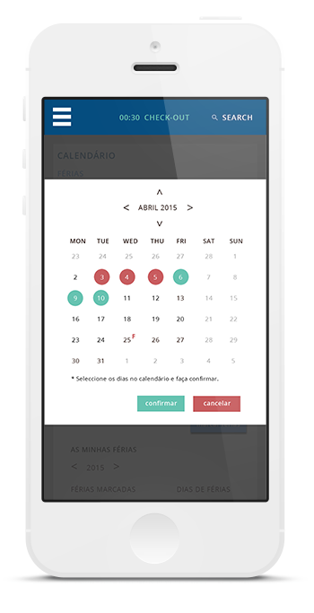

Botões
Os botões estão divididos em três categorias, os botões de confirmação, de acção e os links. As suas acções vão desde botão activo a inactivo, sendo que quando o rato passa por cima do botão o mesmo fica com relevo (dropshadow).
Botões de Confirmação
Um botão de confirmação é um botão que têm como função principal uma acção obrigatória e distinta. Este tipo de botões estão sempre aos pares, visto que um normalmente funciona como confirmação, e o outro como anulação.
Web
Os botões primários têm uma altura e largura mínima de 36 px e 113 px respectivamente.
A tipografia do texto dos botões é a Open Sans Regular, tamanho 14 pt.
Mobile
Num ecrã mais pequeno onde não existe rato é necessário aumentar o tamanho dos elementos por forma ao utilizador os conseguir seleccionar com o dedo. Assim, os botões em mobile passam a ter uma altura e largura mínimas de 189x53px.
O tamanho mínimo a ser usado num ecrã mobile é de 5 pt.

Botões de Acção
Os botões de acção são utilizados sempre que é preciso um botão para uma função numa interface do UIS. Os botões podem ter duas larguras diferentes consoante a quantidade de letras do botão.
Web
Os botões secundários têm uma altura mínima de 36 px e uma largura variável consoante a quantidade de texto.
A tipografia é a mesma para todo o tipo de botões, Open Sans Regular, tamanho 14 pt.
Mobile
A tipografia e o tamanho dos botões mantém-se o mesmo dos botões de confirmação.
Links
Os links direccionam o utilizador para outra página, e podem estar inseridos em tabelas, textos, ou para indicar um ficheiro anexo.
Os links são sempre Open Sans Semibold Underline, e sempre que o rato passa por cima mudam de cor.
Estas características são válidas tanto para web como para mobile.


 


